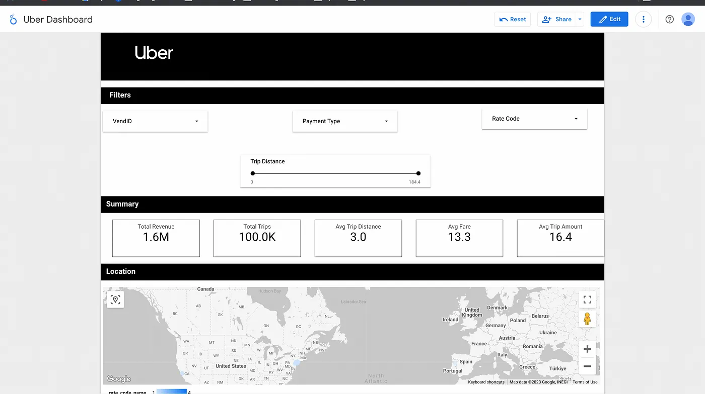

Uber Data Analytics (Google Cloud Platform)
Introduction
TThis project was developed to analyze Uber ride data to optimize service efficiency and enhance customer satisfaction. Utilizing Google Cloud technologies, including Cloud Storage, Compute Engine, BigQuery, and Looker, the project involves building a comprehensive data pipeline to handle and analyze large volumes of ride-sharing data effectively. This solution demonstrates advanced data engineering techniques and cloud-based analytics to drive strategic business decisions.
Data Collection
The data is primarily sourced from operational databases and is stored in uber data.csv, which includes comprehensive details such as ride timestamps, locations, distances, and payment information. This CSV file is then uploaded to Google Cloud Storage, a secure and scalable storage solution, to ensure data availability and integrity. This setup enables seamless data accessibility for subsequent extraction and processing. By leveraging cloud storage, the project ensures that the data handling is both efficient and scalable, accommodating the continuous influx of new data, which is crucial for maintaining up-to-date analytics and insights. This approach not only streamlines the initial stages of the data pipeline but also supports the dynamic and growing needs of Uber's data-driven decision-making processes.
Architecture
 The architecture of the Uber Data Analytics Project is built upon Google Cloud's robust infrastructure,
designed to handle extensive datasets efficiently from ingestion to visualization. At the foundation,
raw data is stored in Google Cloud Storage, providing a durable and highly accessible environment for
the vast volumes of Uber operational data. This data is primarily composed of trip details, which
include time stamps, locations, distances, fares, and more.
The architecture of the Uber Data Analytics Project is built upon Google Cloud's robust infrastructure,
designed to handle extensive datasets efficiently from ingestion to visualization. At the foundation,
raw data is stored in Google Cloud Storage, providing a durable and highly accessible environment for
the vast volumes of Uber operational data. This data is primarily composed of trip details, which
include time stamps, locations, distances, fares, and more.
The next stage in the architecture involves the ETL (Extract, Transform, Load) process, which is
facilitated by Mage running on Google Compute Engine. Mage, a modern ETL tool, is pivotal for
transforming raw data into a format suitable for analysis. It handles tasks such as cleaning,
validating, and transforming data, ensuring that the data loaded into the analytics engine is accurate
and optimized for querying.
Once processed, the data moves to Google BigQuery, a powerful and scalable data warehouse designed for
large-scale data analytics. BigQuery enables fast SQL queries to be executed across millions of rows,
allowing for complex analyses and aggregations that drive strategic business decisions.
Finally, the insights derived from BigQuery are visualized in Looker, a data visualization tool
integrated within the Google Cloud platform. Looker provides dynamic dashboards that are crucial for
real-time decision making, offering interactive and user-friendly interfaces that allow stakeholders to
drill down into specific metrics and trends.
This architecture not only ensures seamless data flow and scalability but also supports advanced
analytics capabilities, enabling Uber to derive actionable insights from their data effectively.
Data Model
 The data model diagram presented here illustrates the structured approach taken in the Uber Data
Analytics Project to organize and relate various data elements crucial for in-depth analysis of Uber's
operational data. This model is designed to support efficient querying and analysis in a data warehouse
environment, specifically using a star schema, which optimizes the processing of large datasets
typically found in business intelligence applications.
The data model diagram presented here illustrates the structured approach taken in the Uber Data
Analytics Project to organize and relate various data elements crucial for in-depth analysis of Uber's
operational data. This model is designed to support efficient querying and analysis in a data warehouse
environment, specifically using a star schema, which optimizes the processing of large datasets
typically found in business intelligence applications.
At the core of this schema is the fact_table, which includes keys to various dimension tables along with
measures such as fare amount, extra charges, taxes, tips, tolls, and the total amount charged per trip.
This central table is essential for performing most of the analytical queries that drive business
decisions. The fact_table contains foreign keys linking to several dimension tables:
- datetime_dim: Stores detailed date and time information for each trip, broken down into attributes like year, month, day, hour, and weekday. This allows for temporal analysis of ride frequency and patterns.
- passenger_count_dim and trip_distance_dim: Include details about the number of passengers per trip and the distance traveled, respectively, facilitating analysis on passenger load and trip length.
- rate_code_dim: Captures the rate code information that categorizes the trips into various tariff rates, which is useful for revenue analysis.
- payment_type_dim: Describes the method of payment used, which can help in understanding consumer payment preferences.
- pickup_location_dim and dropoff_location_dim: Contain geographic coordinates and identifiers for the start and end points of trips, supporting spatial analysis to identify high-demand areas and optimize route planning.
This structured approach to data organization not only enhances the performance of the database during complex queries but also simplifies the development and maintenance of the BI tools and analytical reports. The dimensions allow for the slicing and dicing of data in various ways, enabling multi-dimensional analysis which is pivotal for uncovering insights that can lead to improved operational efficiency and customer service. This data model is integral to powering the dashboards and analytical tools that drive Uber's strategic decisions, making it a cornerstone of their data-driven approach.
ETL Process
The ETL (Extract, Transform, Load) process is a crucial component of the Uber Data Analytics Project, meticulously designed to ensure that the data is accurately extracted, properly transformed, and efficiently loaded for analysis. This process involves several detailed steps, each tailored to meet the specific analytical needs of the project:
-
Extraction
-
Transformation
-
Loading
The extraction process begins with the deployment of scripts running on Google Compute Engine. These
scripts are specifically designed to interact with Google Cloud's APIs to securely and efficiently
retrieve the data. The API ensures that the data transfer is performed with high throughput and low
latency, catering to the needs of large-scale data operations. These scripts are capable of handling
large files and are optimized to minimize API calls and data transfer times, which is crucial for
maintaining the efficiency of the data pipeline.
Moreover, during the extraction, particular attention is given to maintaining data integrity and
security. Data is transferred over secure connections, and access controls are meticulously managed
to ensure that only authorized processes and personnel can access the sensitive ride data. This step
sets the stage for the subsequent transformation phase by providing a clean, comprehensive, and
well-defined dataset that accurately reflects the raw data collected from the Uber platform.
The transformation phase of the ETL process is meticulously designed to refine and optimize the raw
data for advanced analytics. This phase involves several critical steps to ensure the data is clean,
consistent, and contextually enriched. Initially, the raw data extracted from the uber_data.csv file
undergoes thorough cleaning, where anomalies such as duplicates are removed, missing values are
addressed—either by imputation or exclusion—and any erroneous entries are corrected to maintain data
integrity. Following cleaning, normalization procedures are applied to standardize the data formats
and types in accordance with the schema requirements of the analytical tools downstream, such as
converting all timestamps to a uniform format or standardizing location coordinates.
Feature engineering is a pivotal aspect of the transformation, where new variables are created from
existing data to provide deeper insights into the rides. For example, calculating the duration of
trips from pickup to dropoff times, or creating flags to identify peak travel times based on the
ride timestamps. This step enhances the dataset's utility for predictive modeling and trend
analysis. Integration with external data sources, such as weather conditions or traffic data, occurs
at this stage, adding valuable context that can affect ride patterns and user behavior.
Moreover, aggregation is performed to summarize the data, which facilitates quicker and more
efficient querying. Aggregations might include computing average trip distances or fare amounts by
geographical regions or time periods. This aggregated data is crucial for high-level reporting and
dashboards that monitor business performance metrics. Each of these transformation steps is
critical, ensuring that the data not only meets the business and analytical needs but also supports
robust, data-driven decision-making processes within the organization.
After the transformation steps, which include cleaning, normalization, and aggregation of the data,
the next critical step is to stage the data temporarily. This staging typically happens within a
Google Compute Engine environment, where data can be batched and further quality-checked before
loading to ensure that it aligns with the analytical requirements.
The final loading of data into BigQuery is executed through automated scripts that handle the bulk
transfer of data. BigQuery is specifically chosen for its powerful data warehousing capabilities and
its ability to handle large-scale data queries effectively. This phase is optimized for performance,
minimizing load times and ensuring data integrity through transactional techniques that either
complete the entire load successfully or revert it in case of any issues, thereby maintaining the
consistency of the data warehouse.
Once the data is in BigQuery, it undergoes a final round of validation checks. These checks are
crucial to verify that all data loaded matches the expected volumes and characteristics as per the
transformation logic. This includes checking row counts, validating data types, and ensuring that no
data corruption occurred during the transfer. Automation plays a key role here, with continuous
integration tools set to run these validations automatically and alert the data team in case of
discrepancies.
This careful orchestration of the loading process not only secures the integrity of the data in the
analytical environment but also enhances the overall efficiency and reliability of the data
analytics lifecycle, enabling timely and accurate data-driven decision-making.
Data Analysis
In the Uber Data Analytics Project, data analysis plays a critical role in extracting actionable
insights from the processed data. Once the ETL process populates BigQuery with clean and structured
data, a variety of analytical techniques are applied to understand and optimize Uber's operations. Using
SQL queries, analysts examine various aspects of the data, such as ride frequencies, average fare
amounts, peak travel times, and passenger demographics. This analysis helps identify trends and patterns
that are essential for strategic decision-making.
For example, by analyzing time-stamped data, the team can determine the most in-demand hours and
locations for rides, enabling Uber to adjust their fleet distribution accordingly to meet customer
demand more effectively. Spatial analysis of pickup and dropoff locations reveals geographic patterns
that can inform marketing strategies and operational adjustments. Additionally, segmentation analysis
based on passenger counts and trip distances helps in understanding different user groups and their
specific needs or preferences.
Advanced statistical models and machine learning algorithms are also employed to forecast demand and
optimize pricing dynamically. This predictive analysis is crucial for enhancing resource allocation and
maximizing profitability. Furthermore, the insights derived from BigQuery are visualized in Looker,
where interactive dashboards provide a comprehensive overview of key performance indicators and metrics,
making the data accessible and actionable for stakeholders across the organization.
Through meticulous data analysis, the project not only supports operational efficiencies but also drives
innovations in service delivery, enhancing the overall customer experience with Uber. This analytical
framework lays the groundwork for continuous improvement and adaptation in a fast-paced market
environment.
Visualization and Reporting

This dashboard facilitates data-driven decision-making by presenting key performance indicators in a
clear and interactive format. At the top, users can filter the data based on specific criteria such as
VendorID, Payment Type, Rate Code, and Trip Distance, allowing for a tailored analysis based on
operational needs or inquiries.
The "Summary" section of the dashboard succinctly presents crucial metrics: Total Revenue, Total Trips,
Average Trip Distance, Average Fare, and Average Trip Amount. These metrics provide a quick overview of
financial and operational performance. For instance, it shows that the total revenue generated is 1.6
million with 100,000 trips recorded, indicating the scale of operations during the analyzed period. The
average fare and trip distance metrics help in understanding the profitability and efficiency of the
trips.
Below the summary, there is a "Location" section featuring a map visualization that highlights
geographical data. This map allows users to visually assess where the majority of trips are
concentrated, which can help in strategic planning for fleet distribution and marketing initiatives.
This geographical analysis is crucial for identifying high-demand areas and optimizing resource
allocation to improve service responsiveness and customer satisfaction.
Challenges and Solutions
Challenge 1: Data Volume and Velocity
The sheer volume and velocity of data generated by Uber rides posed a significant challenge. Processing and analyzing large datasets in real-time required robust infrastructure and efficient data handling capabilities.
Solution:
To address this, Google Cloud Platform's scalable services were employed. Google Cloud Storage was used for its high availability and scalability to store vast amounts of raw data, while BigQuery facilitated rapid querying and analysis. The use of Google Compute Engine allowed for powerful data processing capabilities, ensuring that data could be processed quickly despite the large volumes.
Challenge 2: Data Quality and Consistency
Ensuring data quality and consistency across different data sources was another hurdle. Inaccurate or incomplete data could lead to poor decision-making and inefficiencies.
Solution:
A series of data validation and cleansing steps were integrated into the ETL pipeline. Automated scripts were developed to check for data anomalies, duplicates, and missing values, ensuring that only clean, reliable data was loaded into BigQuery for analysis.
Challenge 3: Complex Data Transformations
The project required complex data transformations, including temporal and spatial analyses, which were computationally intensive and tricky to manage.
Solution:
Advanced ETL tools and SQL functions within BigQuery were utilized to perform these transformations. The use of Mage, a robust ETL tool, helped simplify these processes by providing a framework to manage complex data transformation logic effectively.
Challenge 4: Real-time Data Analysis Needs
The need for real-time analytics to dynamically adjust business strategies was crucial and required a seamless flow of data and insights.
Solution:
This was achieved through the integration of Looker for real-time dashboarding and data visualization. Looker's capability to directly interact with BigQuery allowed stakeholders to access and analyze up-to-date data in real-time, enabling immediate decision-making.